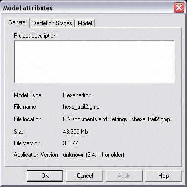

The general tab is
used for general project information. This tab can be found in the Model
Attributes dialog.
The general tab contains
the following items:
|
Project
description |
Use this space to type general information about the model such as who created it and with what imported information (date, location, version etc) for others to be able to retrace.
|
|
Model type |
Model type, either hexahedron or tetrahedron.
|
|
File name |
Name of the project file.
|
|
File location |
Present path to the file location.
|
|
Size |
Size of the
project file
|
|
File Version |
Version of the project file (for compatibility and software developers only).
|
| Application Version |
Geomec release number describing the version of Geomec last used to save
the project file. This is not necessarily the last Geomec (Diana)
version that was used to run the analysis as post-processing changes may
have been made after the analysis execution such as changing colours or
creating Derived Results. There is no means to trace the release number before version 3.4.1.1 since this information was not stored within the project file before this release. |
